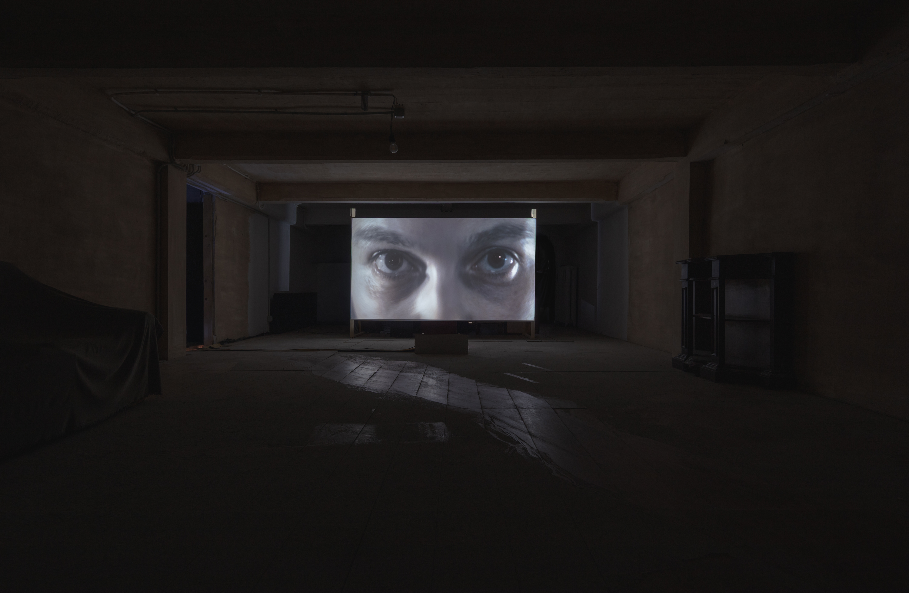
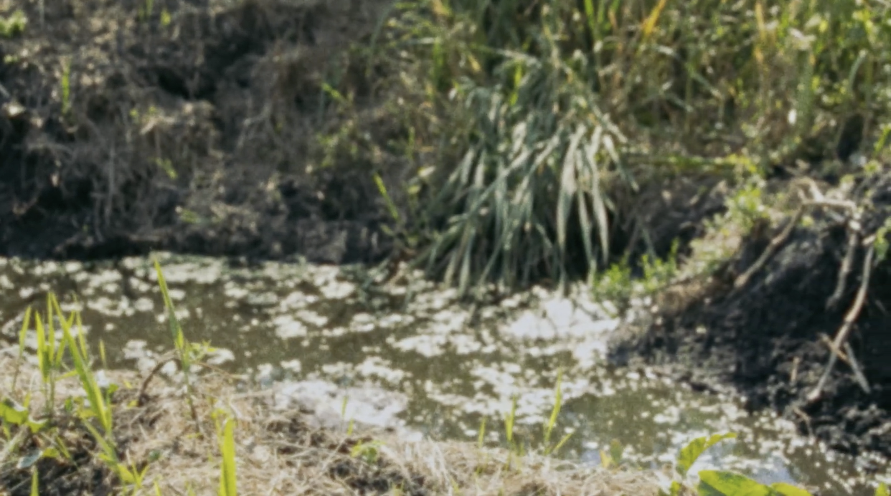

One register, everything dated: writing, artworks, talks. Filter it below.

{{ t.text }}
Who actually makes art, with what skills, under what industrial conditions — and why the making is mystified.
My doctoral research, The making of art: sculptors, artisans, and artists in the Apuan Alps, grew out of fourteen months of fieldwork in a Tuscan marble district in 2020–21. For centuries the district has extracted, marketed and processed marble into luxury commodities, and art manufacturing — ahead of design and architecture — has dominated local identity and commercial strategy.
While a sculpture's making can be fundamental to how we appreciate it, we respond as spectators on highly restricted and sometimes misleading information. Foregrounding production explains both how sculpture is made and why that making is hidden — a question that runs through debates on technology, practical rationality and alienation. The method combines in-person and remote fieldwork with a critical approach to historical evidence.

The artistic work above is made as Prom, a duo with Federico Pozuelo formed in Amsterdam in 2017, and funded through Stichting Prom Art Collective — a Dutch non-profit foundation looking for other ways to produce art outside commodity circuits and traditional institutions.
stichtingprom.nl ↗